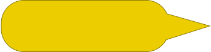

Generally, when a heatmap is generated, each cell corresponds to a single numeric value which in turn unambiguously defines colour of this cell via some colour scale. Yet, nothing in the heatmap chart implemented in the linked-charts library requires the variables passed through value property to be just single numeric values. Of course, the default way of defining colour scale expects these value to be single numbers, but a user can easily override this by setting the colour property. The function, user puts here, gets the value exactly how it has been passed to value property and it can be anything: an array, a sting, another function - as soon as user can define a way of transforming it into colour this can work.
Here, we give an example how to utilise values that are not single numbers. The data that we are using here as an example contain the results of two assays: RealTime-Glo (RTG) that measures cell viabilities and CellTox (CTX) that is proportional to the amount of dead cells in a well. For each drug combination and concentration both values have been measured.
To show both values simultaniously on the same heatmap we will use a green channel for one assay and red for the other one, how it is usually done in macroscopy. Thus, the drugs, which in both assays demonstrated high effect will be shown in yellow, non-effective drugs will be shown as black cells and all others will be either red or green.
Now, instead of one legend we will have two, and both will be interactive colour sliders.
Note that on both charts zooming is possible (double-click to show the entire chart). To order rows or columns of the heatmap according to the values in some column or row one can click on the corresponding label on the heatmap. This default behaviour can be changed by user.
A user of our framework can create apps with very little code. The following code is not complete, since some lines that were explained in the previous example are omitted for the sake of simplicity. Here one can find the complete code for this example.
|
Click on all the yellow bubbles (), going from top to bottom, to see explanations of the code. The heatmap is set almost exactly as it was done in previous examples, except for the two properties: margin and showLegend. So here, all other properties were omitted for the sake of simplisity Some lines of code, whose functionality had been already described in previous examples, were omitted for the sake of simplicity. Here, you can find the complete working code. Since we are going to use colour slider instead of the default legend, we would like to not to have both. The default legend can be turned off by setting showLegend property to false. Each chart has top, bottom, left and right margins, which are used to place axes, titles, legengds. Margins can be set, by an defining an object that has these four fields. Here, we wand to make the bottom margin smaller since we are not displaying legend any more. There is also a set_margin function to change only some of the fields and not care about others. set_margin is another function to define margins. Unlike the default setter chart.margin(), it doesn't require all the fields to be defined, and thus allows to change only some of the margins without redefining others. A sigmoidColourSlider is another type of basic types of charts implemented in the linked-charts library. It's not a selfsuficient chart, but it can be linked to any continuous colour scale of any of the plots, to allow an easy and interactive way of changing the contrast and the midpoint of the scale. Here, we define the colour scale that a colour slider will then modify. In both cases here, we used a colour scale that was internaly defined for the plots from user-set palette and colourRange properties. The other option is use here any other unrelated colour scale, since the colours for the plot will be in any case picked from a transformed by the sigmoidColorSlider scale. By setting the on_change property user defines, what should be done if one of the pointers of a colour slider has been moved. Generally, we would like to have colours of all the cells or points (or other elements) changed. The most obvious way for that to use the chart.update() function. But in this case we know for sure that it's only the colour that has been changes. So we don't need all the chart elements to be recalculated and rerendered, since with larger charts this may take a considerable amount of time. To make this possible the update function for each chart in fact consists of several independent modules that can be called separately. Here, we use updateCellColour() function that is defined for heatmaps and updatePointStyle for plots with axes. Here, we connect our plots with colour sliders by resetting the colour property. Setting colour directly always overrides any ohter settings for colours like palette, or colourRange, or colourScale (which not in fact a property, but an internaly defined field). This makes colour property an ideal connection point between a plot and a corresponding colour slider. Note, that colour property of heatmaps gets value, while the same property of charts with axes get an ID of a data point (or any other element). The value can be directly passed to slider.colourScale, but ID first needed to be converted by layer.get_colourValue(id) function. Initializing and placing a correlation scatter plot and a diogonal line. Another nice thing to do, besides updating a curve fit plot, when a point on a correlation plot is clicked, is to mark this point. Among default styles, used by the linked-charts library there is a class "clicked". In these few lines, we first deselect all points on the plot, and then select the currently clicked one d3.select(this) by adding clicked to the list of its classes. Here, we save the layer of the correlation plot that contains all the points to a separate variable. The default of the ID of each layer is "layerN", where N is it's number starting from zero. chart.get_layer(id) returns a layer by its ID. Here, we set size of the second colour slider. Here, we define a title of the second slider. Here, we initialize and place the a plot to show the curvefits and inhibition values for all individual concentrations. |